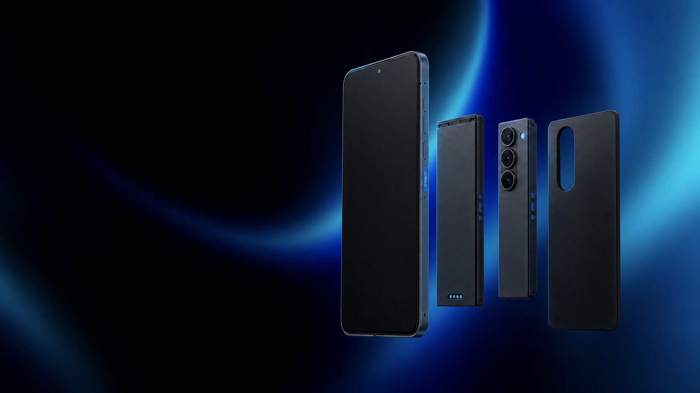
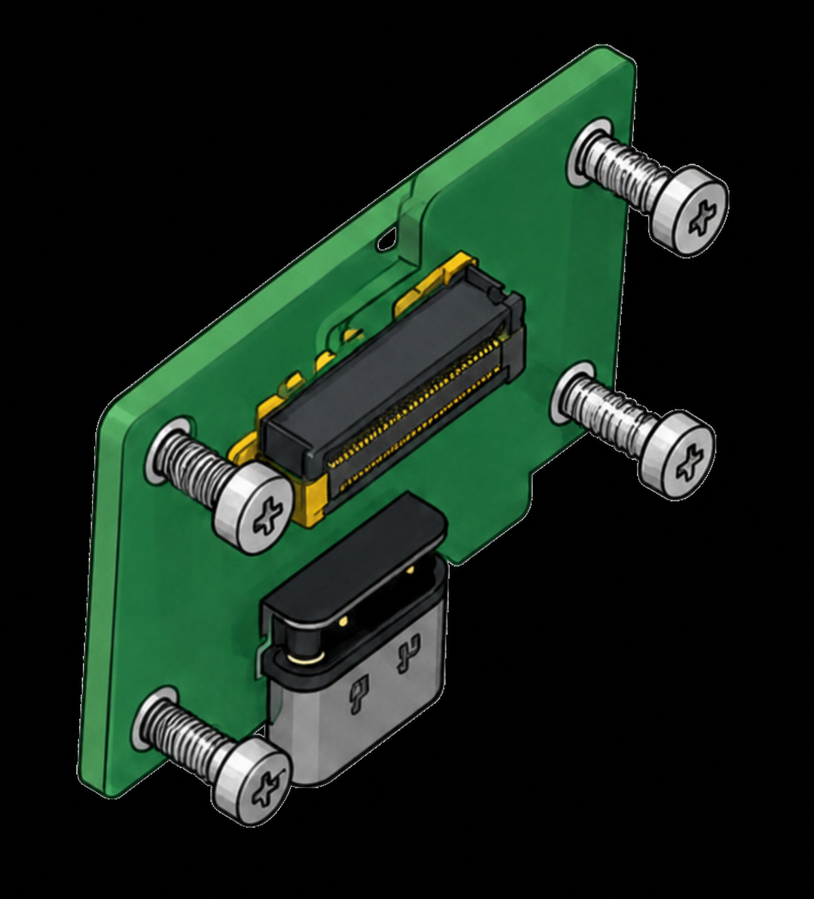
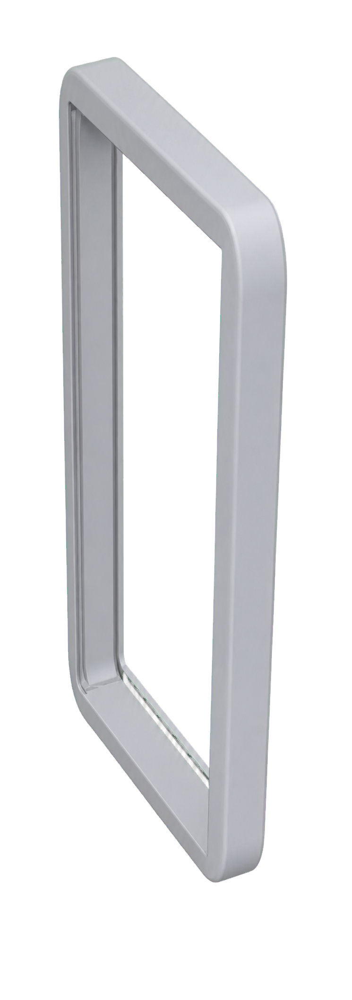
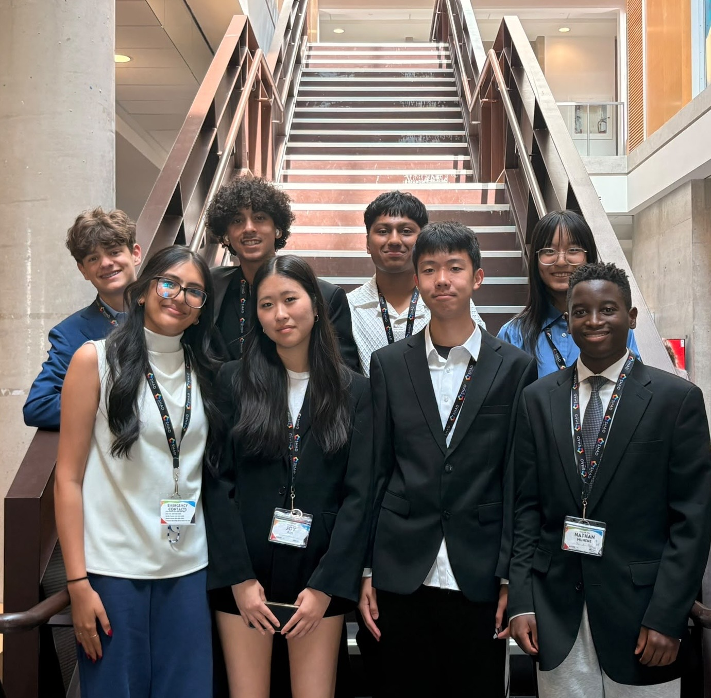

tonnes of electronic waste were generated worldwide in 2022.
Designed to outlast the upgrade cycle
The last phone
you’ll need to replace.
Swap what breaks. Upgrade what matters. Keep everything else.

SCROLL TO EXPLORE
ONE BROKEN PART SHOULD NOT MEAN ONE BROKEN PHONE
We replace too much
for too little.
A worn battery, cracked screen, or damaged port can make an otherwise capable phone feel disposable. Short product cycles turn repairable problems into whole-device replacements—and valuable materials into waste.
was formally collected and recycled through documented systems.
is how often users replace a smartphone on average.
SOURCES: ITU / UNITAR GLOBAL E-WASTE MONITOR 2024 · GLOBAL E-WASTE MONITOR 2024 · EUROPEAN COMMISSION JRC
OUR SOLUTION
Repair the part.
Keep the phone.
{{BRAND_NAME}} is designed as a system of independent modules instead of one sealed device. When something wears out, you replace only what needs attention while your data, settings, and the rest of the phone stay with you.
Simple diagnostics identify the problem, standardized hardware makes the repair approachable, and our return program keeps used components in circulation.
Find the problem.
The {{BRAND_NAME}} app checks the phone and identifies the exact module that needs attention—without guesswork or an unnecessary full replacement.
Swap the part.
Open the phone with one standard tool, remove the worn module, and click in its replacement. No glue, soldering, or repair shop required.
Send it back.
Return the old module using the included mailer. Working parts are refurbished, while remaining materials are sent through responsible recycling channels.
Upgrade the part.
Not the whole.
Our first physical prototype focuses on five replaceable parts.

PART 01 / J
Charging port
Replace the highest-wear connectionPART 02 / C
Camera
Swap the lens and sensor together＋
—
—
PART 03 / J
Buttons
Separate high-wear controlsPART 04 / J
Battery
Solderless, protected, replaceable
PART 05 / C
Phone base
Reusable outer casing for every partFrom workbench
to everyday use.
Seven milestones across four quarters take {{BRAND_NAME}} from certification to customer support.
Q1
Hardware certification
Secure the required hardware certifications.
Q1
Business registration
Register trademarks and obtain an Employer Identification Number (EIN).
Q1
Firmware testing
Test firmware and confirm software updates and security patches.
Q2
First production run
Finalize a manufacturing partner, produce the first 20 units, and launch warranty support.
Q3
Go to market
Create marketing content, publish a press release, and set up sales channels.
Q4
Customer support
Launch customer support and publish setup guides.
Q4
Grow the team
Hire staff to support the next stage of growth.
Built by people who
believe phones can last.
We’re bringing together product, engineering, design, and circular-economy thinking to make repairable technology practical.

Justin Wang
Prototype · Web development
Yassin Farid
Presentation · Script
Shrey Desai
Research
Jingyi Weng
Business model
Cooper Hazen
Prototype · Script
Joy Kim
Business model
Keya Jariwala
Research · Presentation
Nathan Munene
Research
Let’s build a phone
that lasts.
Have a question, an idea, or want to work with us? We’d love to hear from you.
Contact us